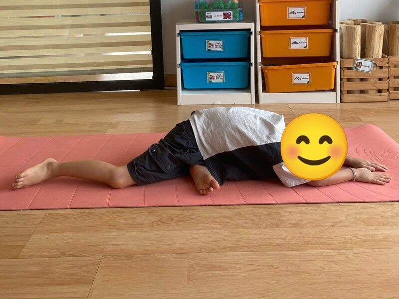
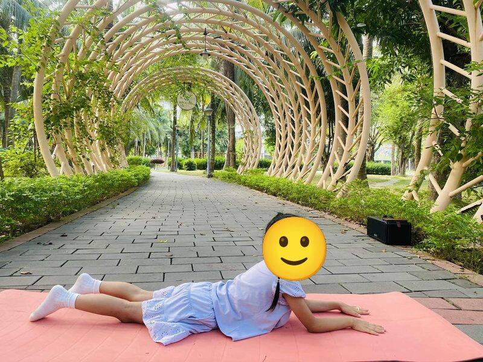
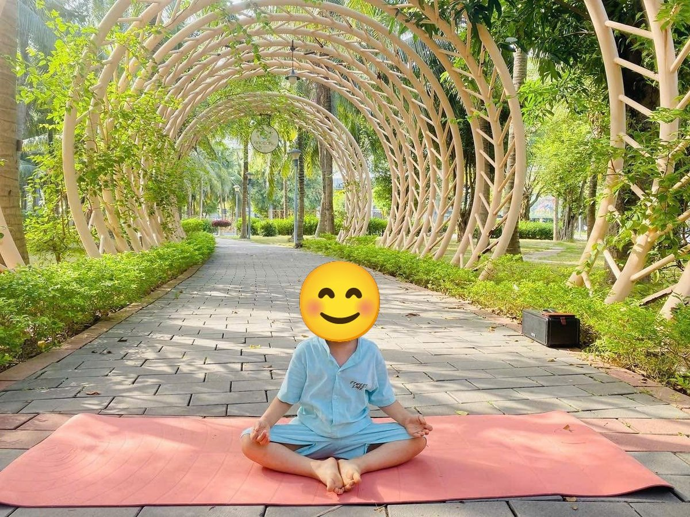
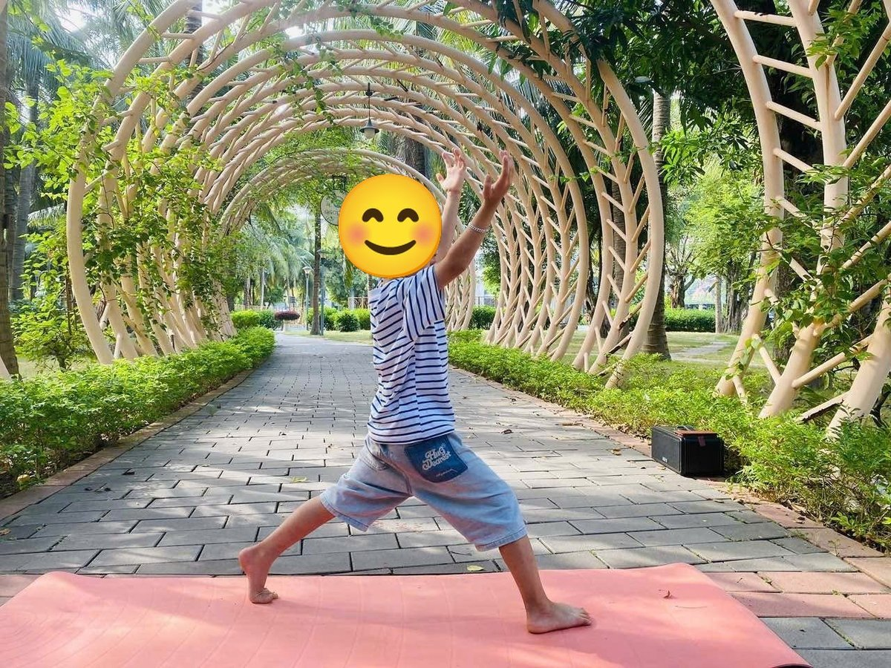

Chủ đề 29 · Động vật trên trời
Đại Bàng Con tập bay
🌟 Bài học trong câu chuyện
Giới luật yoga: Tapas – Kiên trì, cố gắng. Bé không bỏ cuộc, thử lại từng chút một.
Kỹ năng sống: Không bỏ cuộc, tập lại nhiều lần.
1. Khởi động (2 phút)
Cả lớp ngồi xếp bằng thành vòng tròn. Cùng thở 3 hơi thở bông hoa: hít vào bằng mũi như ngửi hoa, thở ra bằng miệng thật chậm. Chắp tay trước ngực và chào nhau: “Namaste, chào các bạn!”
2. Câu chuyện: Đại Bàng Con tập bay (đọc cho bé nghe, 4 phút)
Cô đọc trọn câu chuyện cho bé nghe trước. Sau đó cô kể lại từng đoạn ngắn và cả lớp cùng tập 10 tư thế ở phần bên dưới.
Đại Bàng Con sống trong chiếc tổ trên vách núi cao. Hôm nay mẹ dạy con tập bay. Đại Bàng Con nhìn xuống vực sâu, ôm chặt đôi cánh: "Con sợ ngã lắm mẹ ơi".
Bác Cú Mèo ngồi trên cành bên cạnh: "Ai cũng phải tập mới biết, cháu ạ". Cô Chim Hạc đứng một chân trên mỏm đá: "Ngày trước cô cũng ngã nhiều lần khi tập đứng thế này". Bạn Bướm bay quanh: "Tớ vỗ từng cái nhỏ thôi, nhẹ nhàng thôi".
Đại Bàng Con thử vỗ cánh, nhưng mới bay được một chút đã rơi bịch xuống tổ. Đại Bàng hơi muốn khóc. Rồi Đại Bàng hít một hơi thật sâu: "Mình thử lại".
Lần thứ hai, Đại Bàng dang rộng cánh như chiếc máy bay, lướt được một đoạn ngắn. Chị Thiên Nga vươn cổ khen: "Giỏi lắm!". Bạn Ong bay vòng quanh hát "ừmmm" cổ vũ.
Lần thứ ba, Đại Bàng dang cánh thật rộng như chuồn chuồn, giữ thăng bằng trong gió. Và rồi Đại Bàng Con bay vút lên cao, cao như cánh diều giữa trời xanh! "Con làm được rồi mẹ ơi!". Mẹ Đại Bàng bay bên cạnh: "Con đã không bỏ cuộc, mẹ tự hào về con".
3. Kể lại và tập 10 tư thế (6 phút)
-
 1
1Đại bàng
🧘 Tư thế Đại bàng (Eagle)
Lời kể khi tập: Đại Bàng Con ôm chặt cánh: "Con sợ ngã lắm".
Cách làm: Đứng một chân, chân kia co lên, bàn chân móc nhẹ vào cổ chân trụ, hai tay dang rộng như đôi cánh đại bàng giữ thăng bằng. Giữ 3 đến 5 nhịp thở.
-
 2
2Cú mèo
🧘 Tư thế Ngồi xếp bằng (Easy Pose)
Lời kể khi tập: Bác Cú Mèo ngồi bên: "Ai cũng phải tập mới biết, cháu ạ".
Cách làm: Ngồi xếp bằng, lưng thẳng, hai tay đặt nhẹ trên đầu gối. Giữ 3 đến 5 nhịp thở.
-
 3
3Chim hạc
🧘 Tư thế Hồng hạc (Flamingo)
Lời kể khi tập: Chim Hạc đứng một chân: "Ta cũng ngã nhiều lần khi tập đứng".
Cách làm: Đứng một chân, co chân kia lên, hai tay dang như cánh chim. Giữ 3 đến 5 nhịp thở.
-
 4
4Con bướm
🧘 Tư thế Con bướm (Butterfly)
Lời kể khi tập: Bướm vỗ cánh: "Tớ vỗ từng cái nhỏ thôi". Mình vỗ cánh bướm.
Cách làm: Ngồi, áp hai lòng bàn chân vào nhau, hai gối mở sang hai bên, tay dang như cánh hoặc nắm bàn chân, gối đập nhẹ như cánh bướm. Giữ 3 đến 5 nhịp thở.
-

5Chim bồ câu
🧘 Tư thế Bồ câu (Pigeon)
Lời kể khi tập: Đại Bàng Con thử vỗ cánh, rồi rơi xuống tổ. "Mình thử lại".
Cách làm: Ngồi, co một chân ra trước, chân kia duỗi thẳng ra sau, từ từ cúi người xuống, hai tay duỗi dài trên thảm như chú chim bồ câu đang nghỉ. Giữ 3 đến 5 nhịp thở.
-
 6
6Máy bay
🧘 Tư thế Máy bay (Warrior 3)
Lời kể khi tập: Lần hai, Đại Bàng dang cánh như máy bay, bay được một đoạn!
Cách làm: Đứng trên một chân, nghiêng người về trước, chân kia duỗi thẳng ra sau, hai tay dang như cánh máy bay. Cô có thể đỡ nhẹ chân sau giúp bé giữ thăng bằng như trong ảnh, hoặc bé vịn tường. Giữ 3 đến 5 nhịp thở.
-

7Thiên nga cổ dài
🧘 Tư thế Rắn hổ mang (Cobra)
Lời kể khi tập: Thiên Nga vươn cổ khen: "Giỏi lắm!"
Cách làm: Nằm sấp, chống hai tay (hoặc hai khuỷu tay) dưới vai, nâng ngực lên, phát tiếng xì xì như rắn. Giữ 3 đến 5 nhịp thở.
-

8Ong bay vo ve
🧘 Tư thế Thở tiếng ong (Bee Breath)
Lời kể khi tập: Bạn Ong bay quanh hát "ừmmm" cổ vũ.
Cách làm: Ngồi xếp bằng, nhắm mắt, hít vào bằng mũi, thở ra kêu "ừmmm" như ong bay (có thể bịt nhẹ hai tai). Giữ 3 đến 5 nhịp thở.
-

9Chuồn chuồn
🧘 Tư thế Chiến binh 2 (Warrior 2)
Lời kể khi tập: Lần ba, Đại Bàng dang cánh thật rộng, giữ thăng bằng.
Cách làm: Bước một chân dài ra trước, gập gối trước, chân sau duỗi thẳng, hai tay vươn cao (hoặc dang ngang), đứng vững như chiến binh. Giữ 3 đến 5 nhịp thở.
-
 10
10Con diều
🧘 Tư thế Ngôi sao (Star)
Lời kể khi tập: Đại Bàng Con bay cao như cánh diều! "Con làm được rồi mẹ ơi!"
Cách làm: Đứng dang rộng hai chân, hai tay dang ngang thật thẳng, cả người thành ngôi sao năm cánh. Giữ 3 đến 5 nhịp thở.
4. Thư giãn (2 phút)
Các con nằm ngửa, tay chân thả lỏng, nhắm mắt lại. Cô nói nhẹ: “Hít vào thật chậm… thở ra thật chậm… Con nhớ lại câu chuyện vừa rồi, nhớ người bạn mình thích nhất trong truyện. Cơ thể con mềm như bông, nhẹ như mây.” Sau đó các con nghiêng người, từ từ ngồi dậy.
5. Trò chuyện cùng bé (1 phút)
Đại Bàng Con rơi rồi lại thử, thử nhiều lần mới bay được. Kiên trì là Tapas.
Cô hỏi các con:
- Có việc gì con thấy khó?
- Khi chưa làm được, con sẽ làm gì?
Kết thúc bằng lời chào “Namaste” và một nụ cười.
Lưu ý cho thầy cô và bố mẹ: Tập trên thảm, không tập ngay sau khi ăn no. Bé chỉ làm tới mức thấy dễ chịu, không ép bé. Tư thế đứng một chân có thể cho bé vịn tường hoặc vịn tay người lớn.